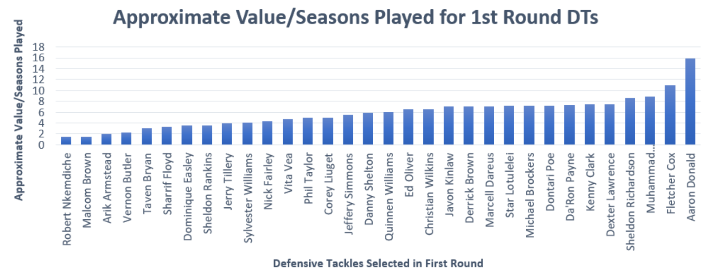
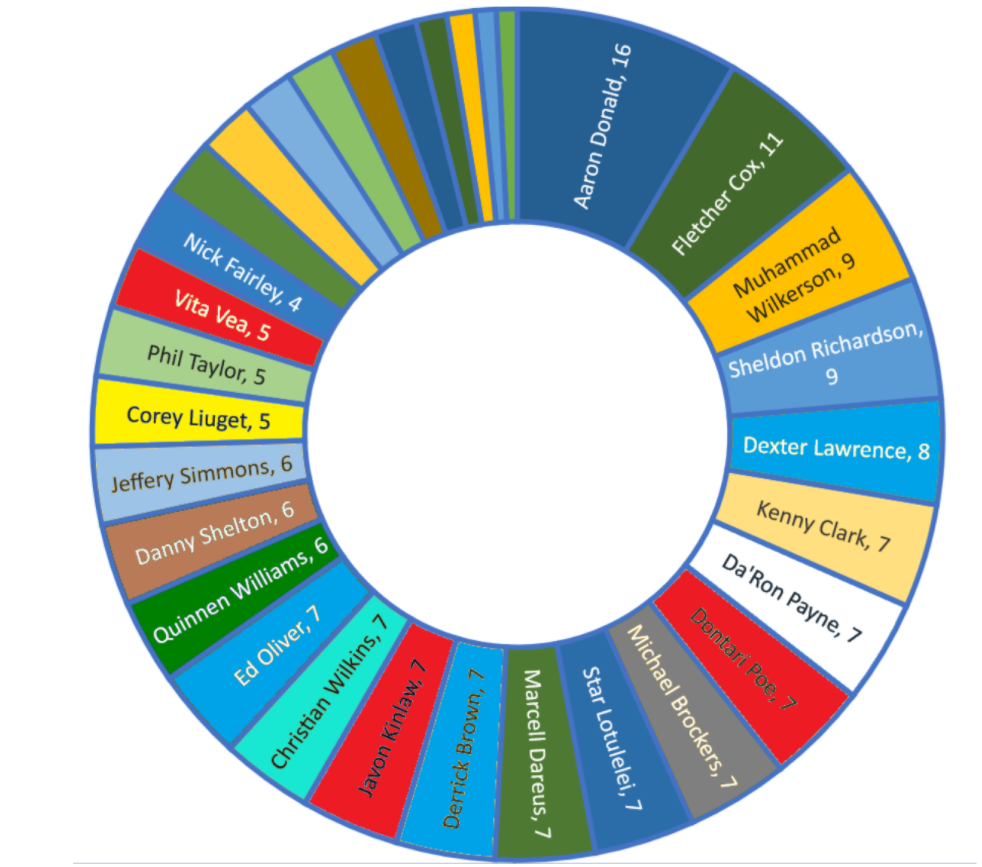
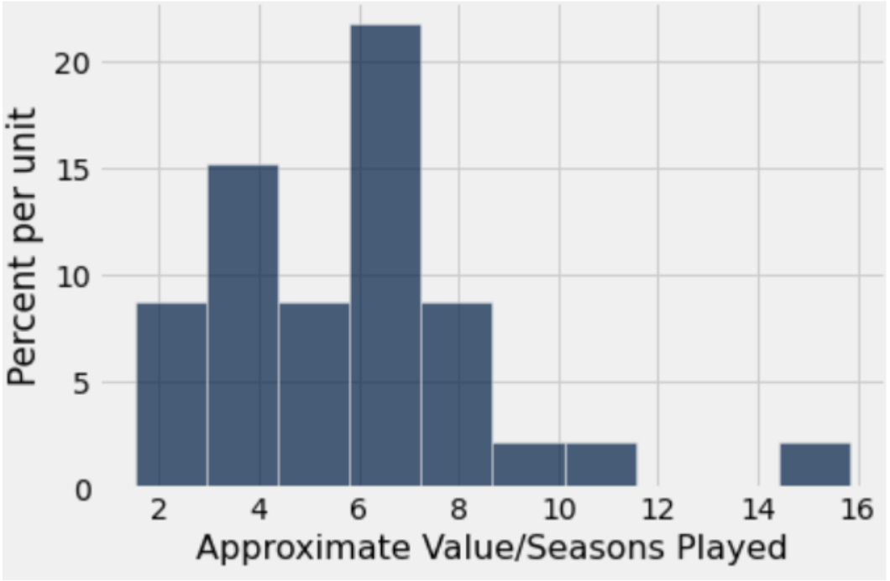
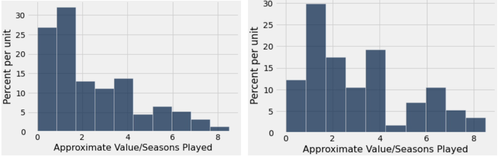
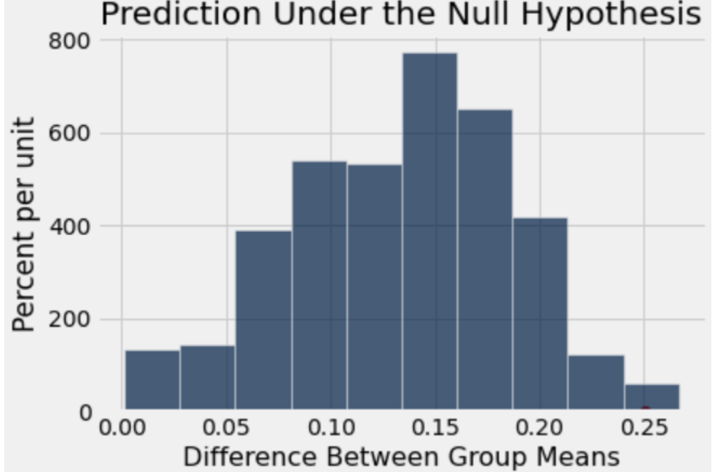
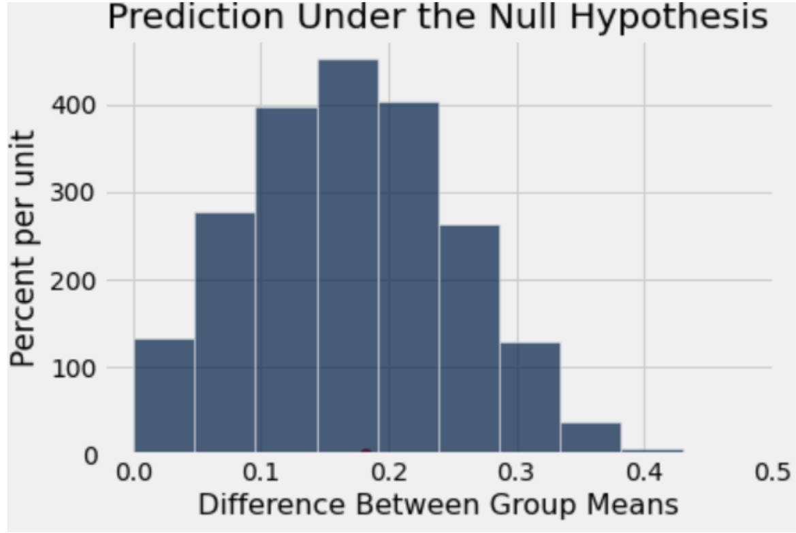

If You're Drafting a Defensive Tackle in the First Round, What are you Doing?
By Arnav Singhvi | March 30, 2021
.gif)
The title says it all. In the age of dual-threat quarterbacks, play-making pass catchers, elite pass rushers, lock-down corners and formidable offensive lineman, the value for selecting a defensive tackle early in the draft has become more shallow than ever. The question simply is whether drafting DTs in the first round will help a rebuilding 4-8 win team make that needed “leap” expected and desired from a first-round talent. Unless the draft board offers a generational talent that will redefine the defensive line beyond run-stopping and gap coverage (see Aaron Donald), the short answer is no.
Here’s the long answer:
.gif)
The definition of a “defensive tackle” is the position that clogs the middle of the offensive line to stuff vertical rushing formations and generates interior pressure to clear additional lanes for defensive edges and rushing linebackers to sack the quarterback. The position consists of varying archetypes: run-stuffers (nose-tackles), gap-fillers (4-3 scheme tackles), and should-be-DEs (see Aaron Donald). However, defensive edges and outside linebackers are highly coveted mainly because of their ability to generate pressure without interior help, using bull rushes and swim moves to attack the edge gaps and effectuate productive QB pressures. Additionally, blitz schemes essentially neutralize the impact of a defensive lineman to simply entail keeping their assigned fronting lineman occupied and thereby allowing more agile linebackers and defensive backs to swarm the opposing offense. Although defensive tackles certainly provide value to the battle of the trenches, the new generation of edge rushers like Nick Bosa and JJ Watt and blitzing outside linebackers like TJ Watt and Za’Darius Smith are much more highly desired and historically provide greater value to the foundations of dominant defenses.
 Now to the question of whether drafting defensive tackles in the first round justifies the value of play on the field. To determine the individual positional value for the defensive tackle position, the Approximate Value statistic created by Pro Football Reference assigns a number to “the seasonal value of a player at any position from any year.” An average value of 10 for a defensive tackle is considered elite, 7 Pro-Bowl level, and 5 starting-caliber.
The graph of the average AVs (calculated by dividing the player’s cumulative career AV by seasons played) for defensive tackles drafted in the first round over the last decade portrays a collective average AV of 5.85 (with the outlier of Aaron Donald with an average AV more than double the collective average at 16).
The graph for defensive tackles drafted after the first round indicates a right skew in the average AVs with a collective average of 2.38 — less than half of that of first-round DTs. However, comparing the defensive tackles drafted on Day 2 (rounds 2 and 3) yields a less exaggerated right skew with a higher collective average of 3.10 — more than half of that of first round DTs. This difference potentially occurs due to the effect of removing late-round picks that are respectfully more unlikely to have successful careers, given the lack of opportunities compared to those presented to early-round defensive tackles who have equally higher career expectations. Now one could make the argument it is “safer” to draft Pro-Bowl level talent to secure the defensive line trenches and while that would hold true if general managers could draft such talented DTs at higher rates than 40%, they would better benefit from drafting quality starters with more expendable picks (and tender/compensation picks) in rounds 2 and 3 at around 22%. Although less than the first-round draft rates and possibly enticing, the concept of opportunity cost emphasizes the importance of whether acquiring such talent in the first round is more valuable than drafting desirable team-changing positions such as quarterbacks, offensive linemen and pass-rushers. And with this presumptive belief, can teams still succeed with drafting defensive tackles with their later-round picks?
This analysis stems from two sample A/B testing, determining whether two numerical samples have the same distributions. The test’s null hypothesis states that in the dataset of defensive tackles drafted in a 10-year sample (2010-2011), the proportion of Pro-Bowl defensive tackles drafted in the first round is the same as the proportion of starters drafted in rounds 2-7. Any difference in the two proportions otherwise is due to random chance. The test’s alternative hypothesis claims that there exists a difference between both proportions which is significant. The observed statistic with the given dataset is 0.25, calculated by finding the absolute difference between the proportion of first round DTs with AVs above 7 (Pro-Bowlers) and the proportion of DTs drafted in rounds 2-7 with AVs above 5 (starters). Utilizing the method of random permutations that can simulate the test statistic of the absolute difference of the proportion of starters drafted in rounds 2-7 and the proportion of Pro-Bowl defensive tackles drafted in the first round, the analysis should find no difference between the proportions regardless of which round the player was drafted in. With this concept of shuffled labels, the test simulates the test statistic 25600 times (determined as a simulation for the past 100 years of the NFL’s existence with 256 players drafted in modern draft formats) and plots the difference between the means, finding an empirical p-value of 0.0036. Since the test uses a p-value of 5%, the empirical analysis rejects the null hypothesis and determines that there is indeed a statistically significant difference between the proportions of first-round Pro-Bowl defensive tackles and starters drafted in rounds 2-7. However, this can be accounted for by the evident drop of talent found in later-round draftees (which hence leads to such players getting drafted later) and the corresponding lack of presentable opportunities in the league. Hence, to closely examine the question’s goal, the analysis must condense the dataset to include players only drafted on days 1 and 2 (Rounds 1-3).
Repeating the steps described above and modifying the analysis’ hypotheses and simulations to focus on the proportion of starters drafted in rounds 2-3, the test simulates the test statistic now 10000 times (with about 100 players drafted in rounds 1-3 expounded over the 100 years in the league’s history) and plots the prediction, finding an empirical p-value of .47. Since this is greater than the 0.05 observed p-value level, the model fails to reject the null hypothesis and determines that there is no difference in the proportion of Pro-Bowl DTs drafted in the first round compared to that of quality starters in the second and third rounds.
.gif)
With the tests’ results, the analysis can effectively claim that the value of defensive tackles extends through the 3rd round and offers general managers greater flexibility of drafting talent up front with less valuable assets. Such flexibility allows for trading down, plugging-and-playing quality starters while rebuilding other positions, etc. The NFL draft is already difficult as it is, presenting almost a 50% bust rate in the first round. General managers of rebuilding teams hence would better utilize their prestige picks in more impactful positions that contribute to team wins, providing teams with a strong nucleus to build upon and thereby hindering their chances of returning to the top-15 pick club. So, general managers looking at their big board and circling names of DT prospects on Thursday’s draft night, here’s the TL;DR: just sleep on it.
.gif)